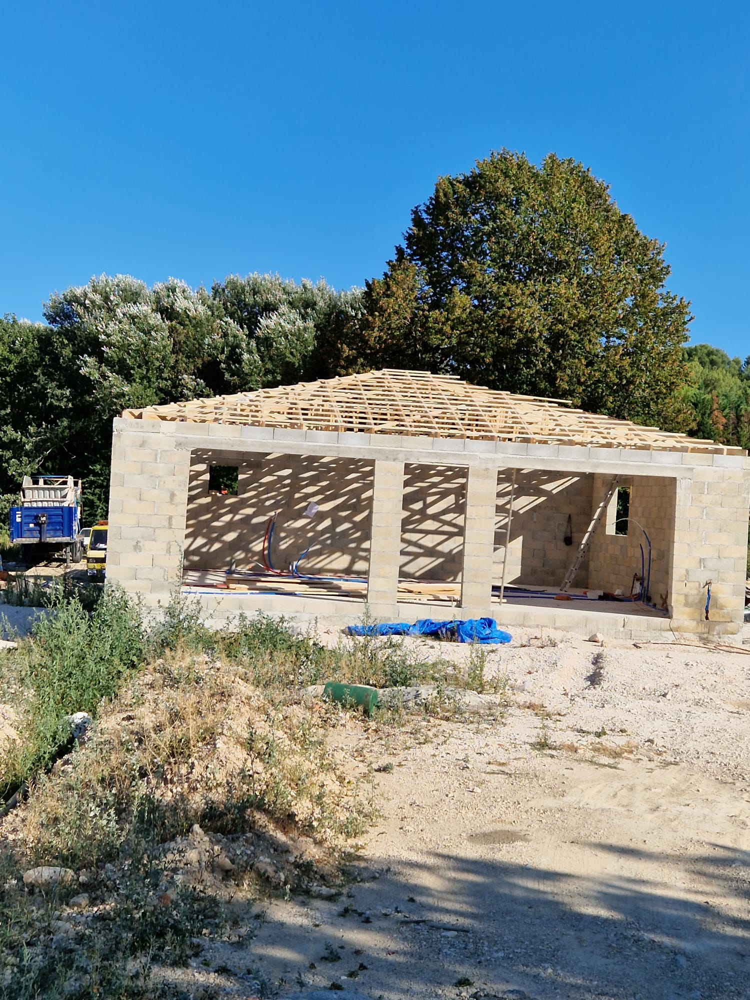

Nos réalisations en construction

Maison neuve
Construction d'une maison contemporaine en agglo banché, offrant une excellente solidité structurelle et une isolation optimale. Le choix du béton banché garantit un style moderne, épuré et durable, idéal pour des projets sur-mesure et performants.

Extension
Réalisation d'une extension sur-mesure : terrasse en béton armé et pool house moderne. Nos travaux garantissent solidité, esthétique et intégration parfaite à l'existant. Idéal pour créer un nouvel espace de vie extérieur confortable et durable..